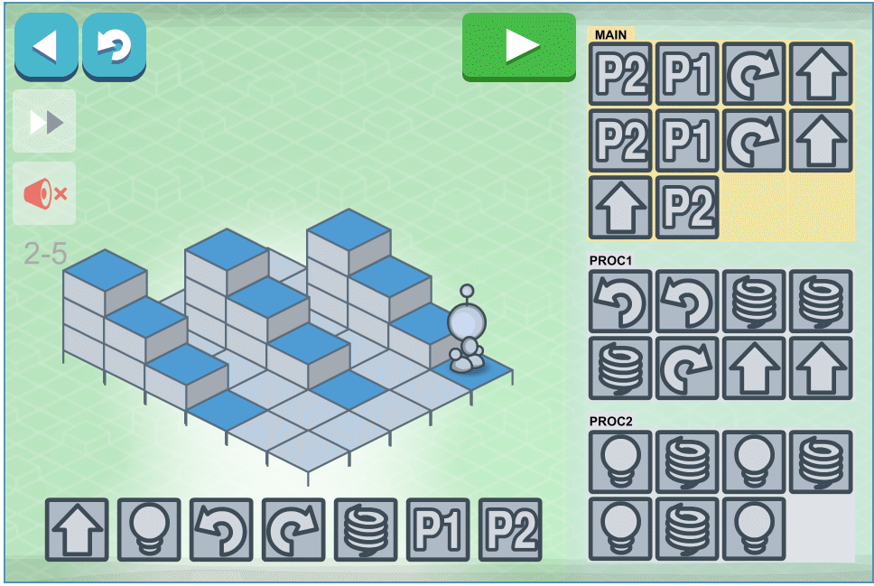
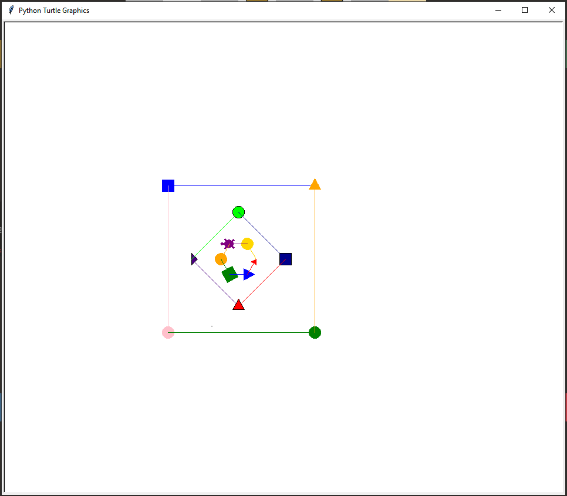
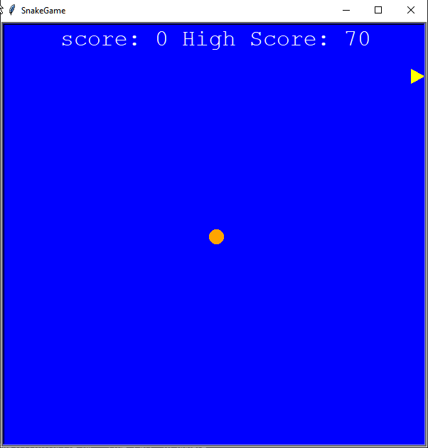

This is my Portfolio Page!
On our second day we were tasked to play around with lightbot. A online game where you have to make the robot light up blue tiles using commands.

This is the result of me and my team working on PLTW 1.1 for around 2-3 weeks. We intergrated all that we learned into this one project and this was the final result. Where we made an
image within and image withing an image. Then we shifted those images so that it looked like the images would teleport from one coordinate to another. This was the best idea we could think
of as we tryed puting most of the things we learned in this activity.

After we worked through 1.2 problems, me and my team again put everything we knew into one project. This time we decided to make the famous Snake game, where you eat an apple and get an
increase in the body length. We made the snake head a circle, and the food a triangle. Each time the snake head is within a distance of 20, the segements increase (so we appeneded a circle
each time food was touched). Also making food worth 10 points each, and setting score = 0 and high_score = 0, and rewriting high_score to score if score > high_score.

Second day scratch project.
Using App Inventor to make app game Duck Hunter.
Interactive Fiction Rags to Riches.
Black Jack game written in Python.
Modified bits in pictures.
Use data files to create graphs.
Using netlogo do remix of illusions.
Interactive Fiction Rags to Riches.